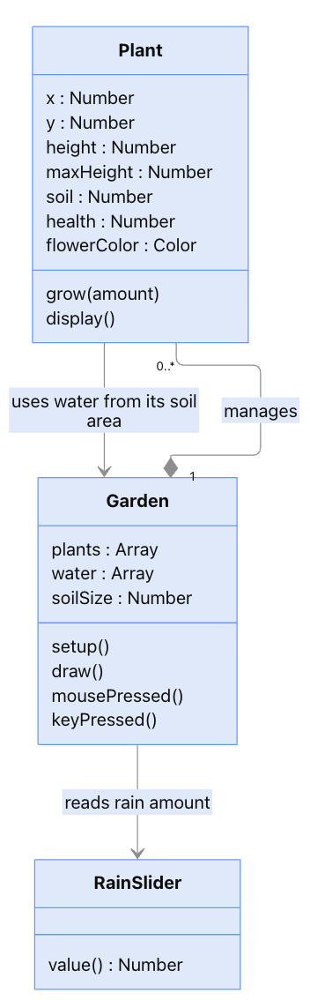

Little Garden
Plant flowers and see how they share water.
How to Use
Click the soil to plant flowers. Move the slider to change the rain. Press C to clear the garden. Darker soil means more water.
My Idea
I wanted to make a small garden that changes depending on how someone takes care of it. You can choose where to plant flowers and how much it rains, but the flowers also depend on the water they share.
Process
I used simple lines and ellipses to draw the plants. Each flower is an object made from the Plant class. It has its own position, height, color, and health. The grow() function updates its growth and health, and display() draws it.
I divided the soil into sections and used an array to store their water levels. Rain adds water to each section. Plants take water from the section they are planted in. If several plants are in the same section, they share the available water.
What Happens
When there is enough water, the flowers grow and bloom. When water runs low, they stop growing and their colors fade. Crowded sections can run out of water sooner, so planting more flowers changes the conditions for the flowers already there.
These simple rules can create different growth patterns. The result depends on planting density and rainfall, rather than a fixed animation.
UML Diagram

Plant is the class defined in the code. Garden represents the main sketch, and RainSlider represents the slider created by p5.js.